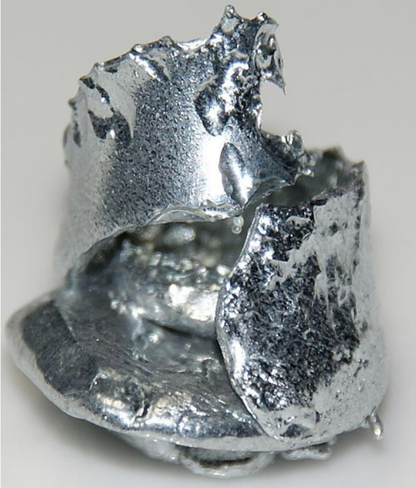
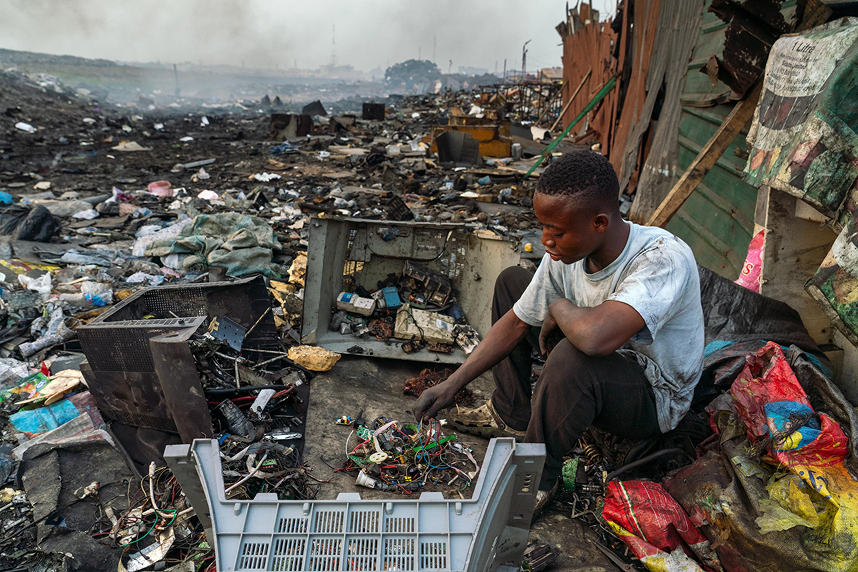
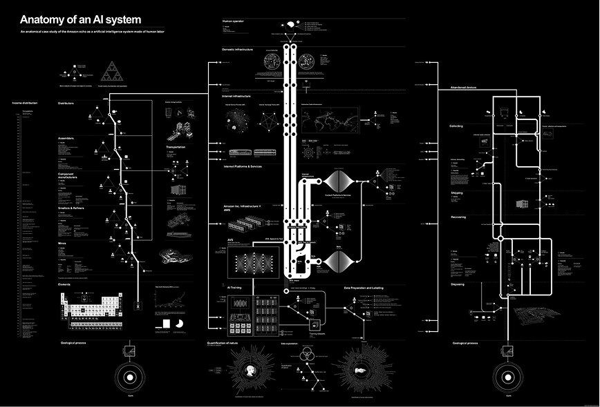
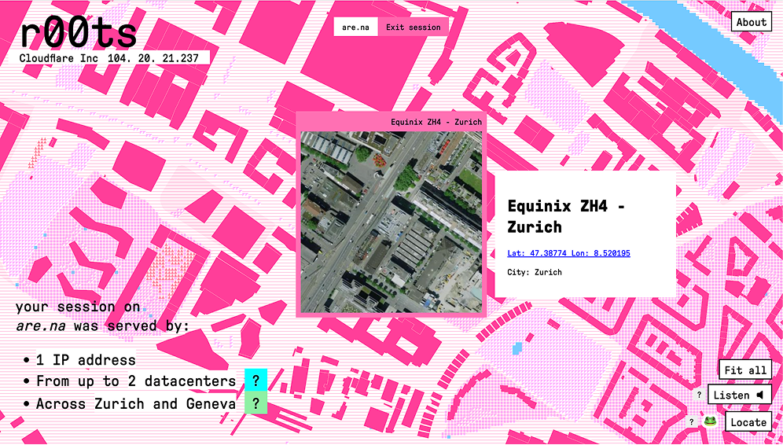
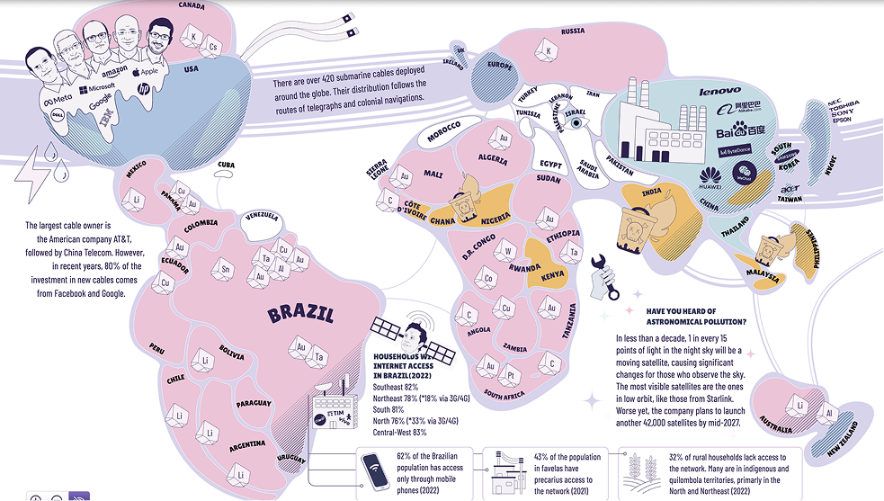
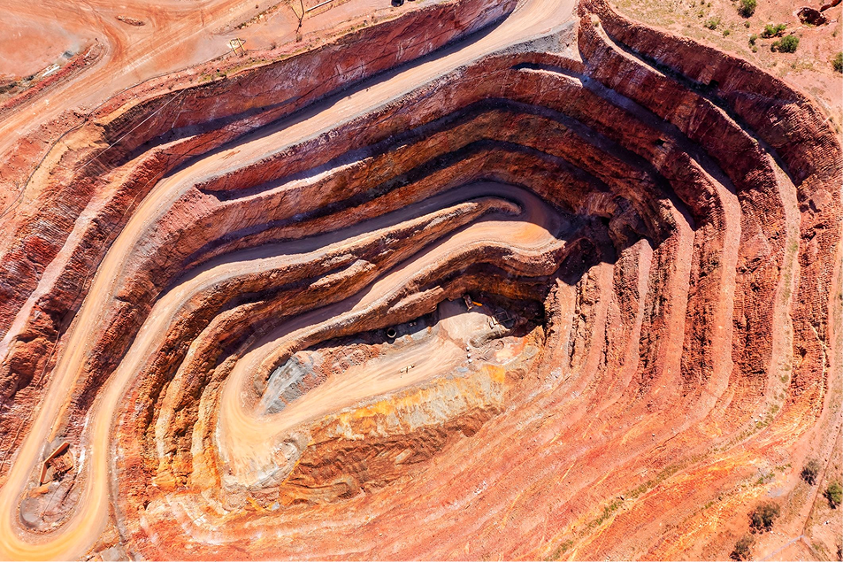
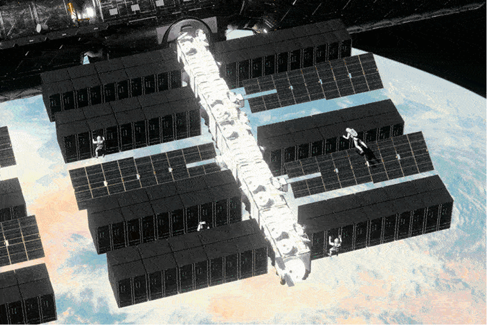
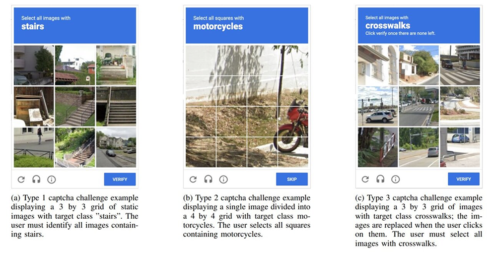
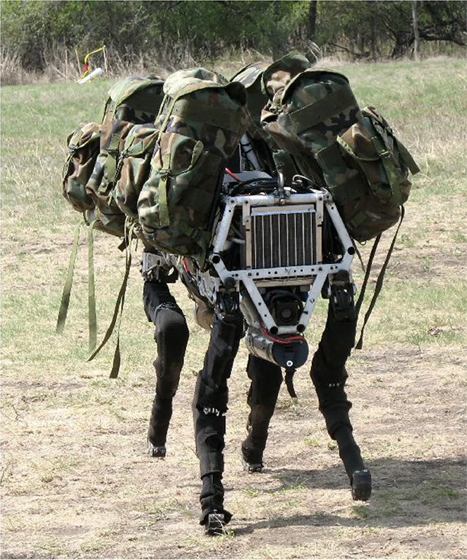

, physical infrastructures , and human labour (■ Parikka, 2015. A geology of media). Artificial intelligence builds upon these foundations, introducing additional demands through large-scale computation, extensive data processing, and increasingly complex models (■ Crawford, 2021. Atlas of AI). These activities consume electricity, require cooling systems that may use substantial amounts of water , and contribute to environmental impacts across hardware production
, operation, and disposal (■ Aczel et al., 2026. Environmental cost of AI’s energy use: Carbon, water and land footprints). Investigating these material dependencies involves two complementary approaches: revealing the resources
, infrastructures and labour behind AI systems, and tracking

their material traces across extraction, production, use, and disposal. Both approaches can be applied across four interconnected dimensions, each opening different questions about AI’s materialities: 1) Geology and ecology {✶ What does AI extract and consume?} Minerals
, land , energy, and water, with uneven environmental impacts across territories (■ Nicoletti et al., 2025. The AI Boom Is Draining Water From the Areas That Need It Most). 2) Infrastructure and computation {✶ Where and how is AI computation performed?} Data centres, factories, cables, and processors reveal its geographical organisation
(■ Coletta et al., 2022. Mapping the clouds: the matter of data centers.). 3) Human labour {✶ Whose work makes AI possible?} Mining, manufacturing, data annotation
, moderation, maintenance, and disposal sustain automated systems (■ Gray & Suri, 2019. Ghost work: How to stop Silicon Valley from building a new global underclass). 4) Embodiment {✶ How does AI interact with bodies and environments?} Sensors, cameras , wearables, robots
, and connected objects embed algorithmic processes into everyday life (■ Greenfield, 2017. Radical technologies: The design of everyday life). Each investigation focuses on a specific aspect of AI’s materialities, explored through the collection and analysis of data. The findings are presented through a data visualisation, accompanied by a multimodal abstract combining different media references to contextualise the topic and expand their interpretation.